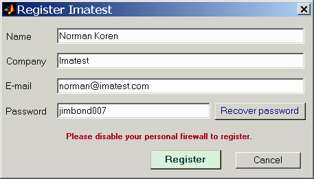
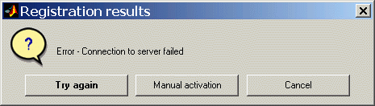
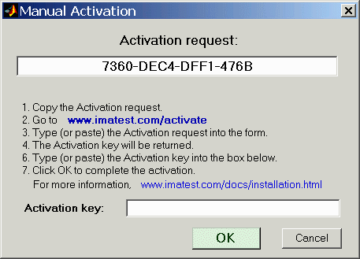
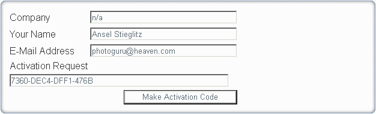

If you haven't dowloaded Gamutvision, go to the Gamutvision download page before proceding. If you plan to install Gamutvision on a computer that will not be conected to the Internet during installation (or if you are behind a strong corporate firewall), download the Matlab runtime library, Imatest-lib.exe (8.5 MB), to the same folder as the Gamutvision installer file. This only needs to be done on the initial installation, not for updates. If Imatest-lib.exe is not in this folder during installation, the installer attempts to download it from the Internet.
You must have administrator priveleges on your computer during installation. This is rarely an issue, except on networked systems with strong security.
If you have a strong personal firewall, you may need to disable it before you install Gamutvision for the first time. You may re-enable it when the installation is complete. This should not be necessary on subsequent installations.
Open Windows Explorer and double-click on the Gamutvision installer file, Gamutvision-version.exe. (Version is the version number, 1.n.m. The Change Log contains the update history.) The version is displayed in the welcome window. Follow the instructions in the installation wizard (mostly clicking Next >). The Gamutvision installation requires approximately 34 MB (mostly the Matlab libraries).
When you install Gamutvision you agree to the terms of the Gamutvision license, which allows an individual user to install and use the software on (A) a maximum of three computers (for example, home, laptop, and office) used exclusively by a single individual, or (B) a single workstation used nonsimultaneously by multiple people, but not both. It is not a concurrent use license. The full text of the license can be found here.
Gamutvision can be run by clicking the Gamutvision icon on the Desktop, the Start menu, or in the Gamutvision installation folder (C:\Program files\Gamutvision in English language installations). Instructions for running Gamutvision are located in Gamutvision instructions. More Gamutvision documentation is located in the Gamutvision Documentation page.
When you first run Gamutvision, it will be in evaluation mode, which allows up to 20 ICC profiles to be analyzed. Evaluation mode has all the capabilities of the registered version except that there is a watermark in the background of several of the plots.
You can upgrade to full unrestricted version by purchasing and registering Gamutvision.
You may purchase Gamutvision at any time from Regsoft.com's secure site. The price is $79 USD. You will be entitled to updates for one year from the date of purchase.
|
You can also click on the Purchase
button in the Gamutvision main window.
After you purchase Gamutvision you'll receive two e-mails. (1) An immediate confirmation of your purchase. (2) A confirmation that your credit card has been accepted. This may take a few minutes. You may register Gamutvision as soon as you receive this e-mail; it contains the password you need to register. These e-mails are cluttered with text from Regsoft. The password is near the middle. If you don't receive the email within about fifteen minutes, contact us or go to the Regsoft Order Questions page.
After you've purchased Gamutvision you'll need to register it by clicking on the button in the Gamutvision window or by clicking on Help, Register. It's a good idea to check the download page or Change log for the latest version.
If you have a personal firewall, be sure to disable it before you register. You may re-enable it as soon as registration is complete. If you can't disable it, follow the instructions below, then continue with Offline registration.
Fill in the the Register Gamutvision window: Enter your name, company (if applicable), e-mail, and the password you received in the second Regsoft e-mail, then click on . If you forgot your password, click on . This opens a web page that enables you to recover your lost password via e-mail.

If your computer is connected to the internet, you will receive a confirmation of your registration. The full version of Gamutvision will be activated immediately.
If your computer is offline, or if you are unable to connect because of a firewall that can't be disabled, the following box appears.

Click on . The box below appears with instructions for manual registration. Steps 2-4 can be performed on any computer connected to the internet.

On www.gamutvision.com/activate, fill in all the fields as shown below, then click . Don't leave any fields blank— always enter something. Your code will be e-mailed to you. Enter it into the Activation key: field, above.

Reminder: For offline installation, the Matlab runtime library, Imatest-lib.exe (8.5 MB), must be downloaded to the same folder as the Gamutvision installer file.
| images (folder) | Contains several image files used by Gamutvision. |
| bin (folder) | Contains the .fig files used in the graphic user interface (GUI), as well as Matlab library files. Includes FigureMenuBar.fig and FigureToolBar.fig: library files missing from Imatest-lib.exe. |
| toolbox (folder) | Subdirectories contain Matlab library files (mostly DLLs). |
| Gamutvision | (full name Gamutvision.lnk) The standard icon for running Gamutvision. Runs start.bat, which sets the path then runs Gamutvision.exe. Copied to Windows Start Menu and Desktop. |
| Diagnoistics | (full name Diagnostics.lnk) Runs Gamutvision in diagnostic mode. Doesn't close when Gamutvision terminates. This allows error messages to be viewed. Runs diagnostics.bat, which sets the path then runs gamutvision.exe. |
| gamutvision.exe | Gamutvision executable program. |
| gamutstart.bat
diagnostics.bat |
Batch files that set the Windows Path and run Gamutvision.exe. Diagnostics.bat is used for diagnostic mode: the DOS window remains open if Gamutvision terminates with an error. |
| License.txt | The Gamutvision End User License Agreement (EULA) |
The Gamutvision license (identical to the Imatest license) allows an individual user to install and use the software on (A) a maximum of three computers (for example, home, laptop, and office) used exclusively by a single individual, or (B) a single workstation used nonsimultaneously by multiple people, but not both. It is not a concurrent use license.
License holders are encouraged to publish test results in printed publications, websites, and discussion forums, provided they include links to www.gamutvision.com. You may not use Gamutvision or Imatest for advertising or product promotion without explicit permission from Imatest LLC. Contact us if you have questions. The full text of the license can be found here.